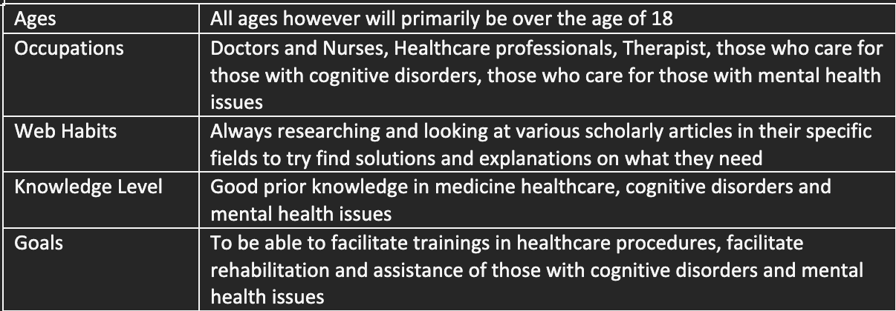
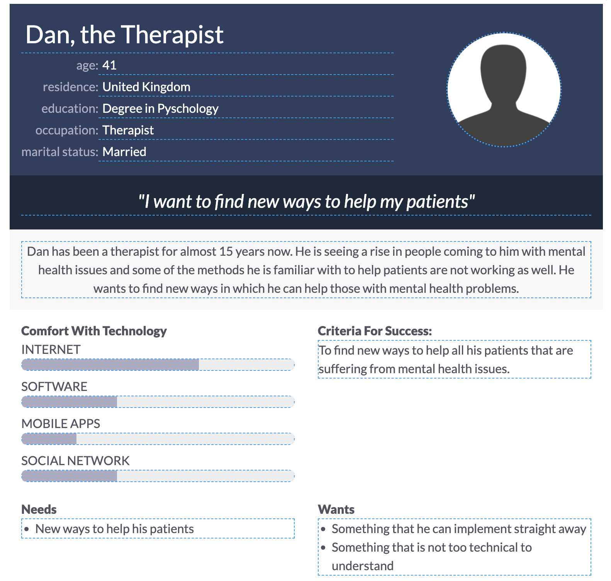

Week 2 - Tasks
Task 1 - Identifying audiences
My topic lends itself to a few audiences such as medicine professionals who will require or want training on surgical operations for example. Other audiences who will be interested in the topic are those suffering from mental health issues so they can read and understand clearly how the use of Virtual Reality could help them. And lastly those who are or who care for those suffering from a cognitive disorders so they can undertsand how the technology can help them or who they care for and how to best help rehabiliate and assist them.
Task 2 - Building an audience persona
Audience Persona
Persona 1

Persona 2
Task 3 - Exploring the audience needs in relation to design
User Story: Exploring the Healing Potential Actor: Sarah, a healthcare professional specialising in mental health Narrative: Sarah wants to explore the potential benefits of virtual reality in treating mental health and cognitive disorders. She is looking for a comprehensive website that explains and analyzes the impact of virtual reality in the healthcare industry, with a specific focus on its applications for mental health patients. Goal: Sarah needs to gain insights into how virtual reality can be integrated into mental health treatments, understand the existing studies and success stories, and find practical information on implementing virtual reality interventions in her practice. The goal is to leverage this technology to enhance the well-being and therapeutic outcomes for her patients. Importance: This user story is crucial as it addresses the growing interest and potential impact of virtual reality in healthcare, specifically mental health. Providing Sarah with a well-structured and informative website will not only empower her with knowledge but also contribute to the wider adoption of virtual reality in mental health treatments. This aligns with the overall goal of the website to disseminate valuable information and promote the positive influence of virtual reality in healthcare.